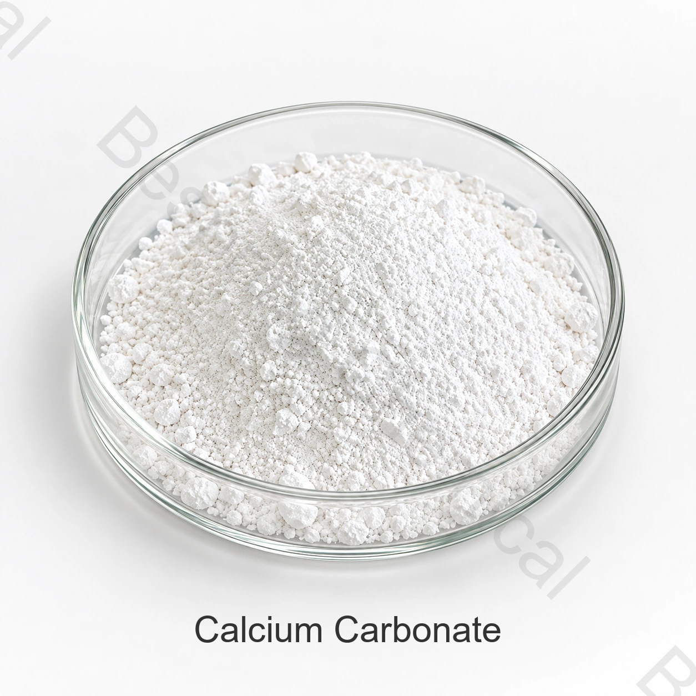

產品身份與等級
請註明具體形態、濃度、用途、數量、包裝、目的地及所需文件。
工業清潔成分 · 助洗劑，礦物和加工鹽 · CC
碳酸鈣是一種礦物粉末，用於選定的清潔配方中作為輕度磨料、填充劑、不透明助劑或加工助劑;粒徑和硬度驅動效能。

產品圖片 · 訂購時請確認等級與包裝
請提供具體形態、濃度、配方、數量、目的地及文件要求。
應用須按具體配方評估的原料
規格現行文件可向銷售團隊索取
安全採用現行 SDS 與工作場所控制措施
批次證明供貨批次可提供現行 COA
產品概述
碳酸鈣是一種礦物粉末，用於選定的清潔配方中作為輕度磨料、填充劑、不透明助劑或加工助劑;粒徑和硬度驅動效能。
適用性取決於具體商品等級、完整配方、處理基材、製造製程、作業人員控制措施、運輸分類和目的地市場規定。本頁用於採購指導，不是使用說明。
採購核查清單
索樣或下單前，請比較所供等級、應用要求和商業條款。
請註明具體形態、濃度、用途、數量、包裝、目的地及所需文件。
索取針對具體貨源的報價，明確現行規格、運輸依據、國際貿易術語及交貨時間範圍。
請提供完整配方、製程、目標功能、處理基材、相容性要求和成品測試資訊。
評估產品標識、檢測方法、COA、SDS、分類、證書、可追溯性及變更控制。
應用評估
以下內容用於配方篩選，不代表普遍適用的許可、使用指導、功效宣告或效果保證。
選擇配方型別的物理等級。評估粉末流動和結塊，或液體溶解和儲存穩定性(如適用 ) 。
指定所需功能並測量整個配方的響應。不要假設每一種無機鹽都能提供有用的鹼度或硬度控制。
在選擇粒徑之前，確定成分的實際作用。對於表面接觸，評估殘留物、沖洗和預期使用中可能的表面損壞。
使用實際汙垢、基質、稀釋和施用裝置進行試驗。在比較來源之前設定清潔和材料相容性標準。
技術選型
確定物理和水合物形態。在比較報價之前，調整含量測定、水分和濃度基礎。
使用適合該成分的測量方法，如矽酸鹽模量或碳酸鹽鹼度。要求採用相關方法，而不是將不同測試視為可互換。
在工作濃度、溫度和混合條件下測試所提供的等級。檢查預定表面上的不溶性物質、沉積物和殘留物。
商定相關雜質限值並確認安全資料表的處理要求。在混合和儲存過程中評估完整的配方。
技術文件
百泉化工不在網上公開該清潔原料的產品規格。請聯絡銷售團隊索取具體貨源的現行規格或 TDS，並確認其版本、檢測方法和指標符合您的稽核流程。
索取現行簽署規格或 TDS、SDS、分析方法、代表性 COA 和批次 COA。
確認產品分類、適用時的聯合國運輸資訊、相容包裝、隔離存放和應急控制措施。
評估 NIH PubChem 化學品記錄 及 歐洲化學品管理局（ECHA）化學品資訊。對於消毒功效宣告，請透過以下機構核實具體成品的註冊標籤： 美國環保署（EPA）參考資料 或相關國家主管機構。
功效宣告說明： 原料標識不能證明成品具有消毒、衛生處理或病原體控制功效。相關宣告和使用指導必須有適用的產品授權及獲批標籤作為依據。
儲存與操作
工業採購常見問題
碳酸鈣是一種礦物粉末，用於選定的清潔配方中作為輕度磨料、填充劑、不透明助劑或加工助劑;粒徑和硬度驅動效能。必須確定完整配方和預期用途的適用性。
CAS 471-34-1;CaCO3;顆粒和表面等級各異。產品系列、溶液、水合物和混合物需要說明確切的商業形式。
百泉化工不在網上公開該工業清潔原料的規格。請聯絡銷售團隊索取具體貨源的現行規格或 TDS、檢測方法及代表性 COA。
索取具體貨源的現行規格或 TDS、SDS、代表性與批次 COA、運輸分類，以及適用的法規、品質和生產場所文件。
請提供具體等級、濃度或形態、預期配方與用途、關鍵限值、數量、包裝、目的地、文件、國際貿易術語及交貨日期。
內容更新於 2026 年 9 月 13 日。
按規格要求採購化工原料
請提供具體等級、濃度或形態、用途、關鍵限值、數量、包裝、目的地及文件清單，以便獲得有針對性的方案。
請提供產品等級和目的地市場，以便確認適用於該訂單的資料。
外部參考資料不等於批次分析證書或百泉產品規格書。